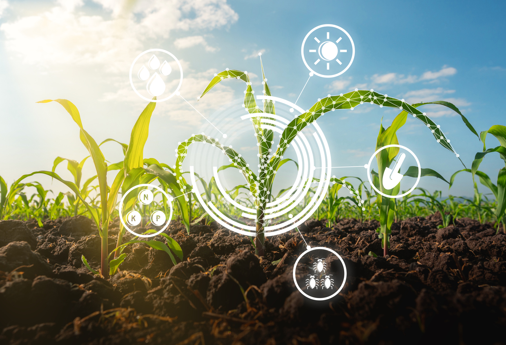

Tecnologia agrícola reforça papel do Brasil
O agronegócio é uma das atividades mais importantes para a economia brasileira e para a produção de alimentos que chegam diariamente à mesa da população.
Transformação e Eficiência
Com o avanço da tecnologia, o campo vem passando por grandes transformações, tornando-se mais produtivo, eficiente e sustentável. Por isso, falar sobre o agro do futuro é refletir sobre como a inovação pode contribuir para o desenvolvimento econômico sem deixar de cuidar do meio ambiente.
Preservação Ambiental
A tecnologia contribui diretamente para a preservação ambiental. Com o monitoramento constante das lavouras, é possível identificar problemas rapidamente e agir de maneira eficiente, evitando o uso excessivo de recursos naturais em toda a cadeia produtiva.

Inovações Tecnológicas do Campo
Atualmente, diversas tecnologias estão presentes nas propriedades rurais. Drones monitoram plantações, sensores analisam a qualidade do solo, sistemas de GPS orientam máquinas agrícolas e a Inteligência Artificial auxilia na tomada de decisões. Essas ferramentas permitem que os produtores utilizem água, fertilizantes e defensivos de forma mais precisa, reduzindo desperdícios e aumentando a produtividade.
Pesquisas científicas também têm desenvolvido soluções inovadoras, como o uso de microrganismos que ajudam as plantas a obter nutrientes de forma natural, diminuindo a dependência de fertilizantes químicos e promovendo uma regeneração profunda do solo cultivável.
Outro benefício importante é a automação das atividades rurais. Máquinas modernas realizam tarefas com mais rapidez e precisão, melhorando a qualidade da produção e reduzindo custos. Dessa forma, o agricultor consegue produzir mais alimentos utilizando menos recursos, o que fortalece a segurança alimentar e promove o desenvolvimento sustentável.
Portanto, o agro do futuro está diretamente ligado à tecnologia. A união entre conhecimento científico, inovação e responsabilidade ambiental possibilita uma agricultura mais eficiente e preparada para os desafios das próximas gerações. Investir em tecnologia no campo significa construir um futuro sustentável, garantindo o equilíbrio entre produção e preservação da natureza.

Seminário Exclusivo
Descubra como a Inteligência Artificial pode transformar o trabalho no campo. Participe do nosso seminário online e fique por dentro das novidades!
Espaço do Leitor
Deixe suas impressões ou dúvidas sobre a digitalização e o futuro do agronegócio.
Canal Rural / Netword Agro • Insight Editorial
A conectividade rural expande a capacidade produtiva e consolida a governança ESG no campo brasileiro.